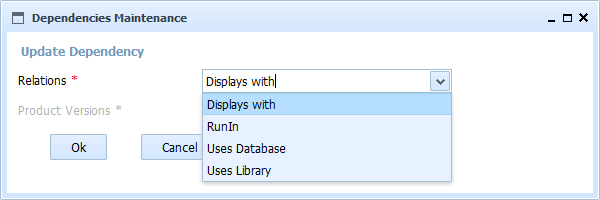

This form allows to modify the relationship of an existing dependency. Nor product neither verion of the product related can be changed. If you want to change the version or the product, it will be managed as a new dependency and you must delete the old one.
Only this field can be changed:

In SMO Tree there is a complete view of operations and forms.